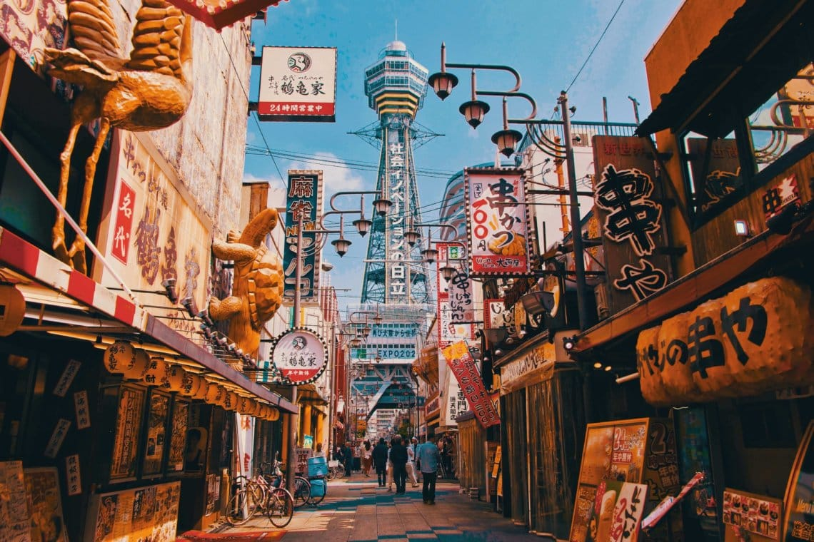
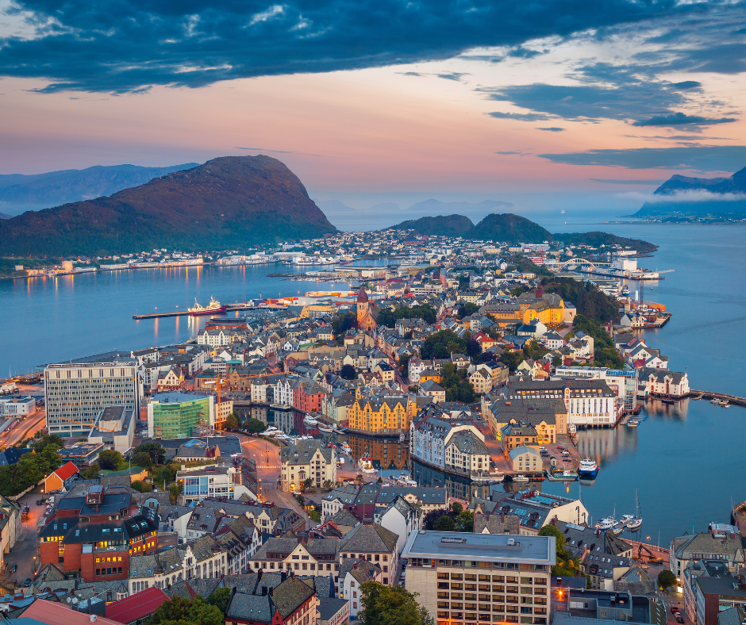
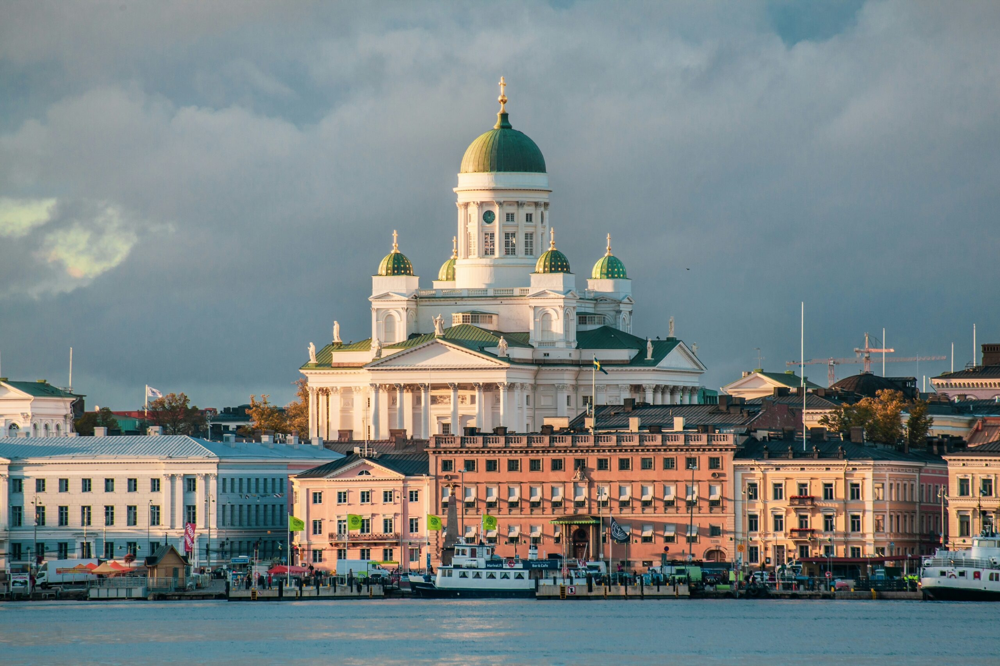

| Local | Descrição | Comprar |
|---|---|---|
|  |
Osaka é uma cidade charmosa e descontraída, mais conhecida por sua culinária, entretenimento e vida noturna - entremeados com um pouco de história e cultura. Osaka fica a apenas uma curta distância de Tóquio por trem-bala, mas é uma cidade muito diferente da capital do Japão. |
|
|  |
A Noruega é um país escandinavo que abrange montanhas, geleiras e fiordes litorâneos profundos. Oslo, a capital, é uma cidade cheia de áreas verdes e museus. Navios vikings preservados do século IX são exibidos no Museu do Navio Viking de Oslo. Bergen, com suas casas coloridas de madeira, é o ponto de partida de cruzeiros rumo ao deslumbrante Fiorde de Sogn. O país também é famoso pela pesca, pelas trilhas e pelo esqui, especialmente no resort olímpico de Lillehammer. |
|
|  |
A Finlândia é uma nação do norte da Europa que faz fronteira com a Suécia, a Noruega e a Rússia. Sua capital, Helsinque, ocupa uma península e ilhas vizinhas do Mar Báltico. A cidade abriga a fortaleza marítima de Suomenlinna, do século XVIII, o moderno Design District e vários museus. A aurora boreal pode ser vista da província da Lapônia, situada no Ártico, que conta com uma vasta área selvagem, além de parques nacionais e estações de esqui. |